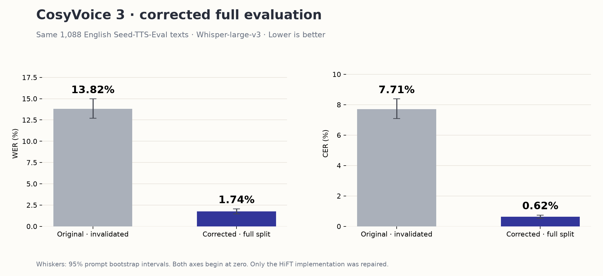

Same full split, corrected vocoder
Download SVG ↓{kind=link}

The complete corrected English evaluation is finished. The current leaderboard, samples and charts use this full result.
| Metric | Original | Corrected |
|---|---|---|
| Corpus WER | 13.8156% | 1.7416% |
| WER 95% interval | 12.6853–14.9670% | 1.4639–2.0445% |
| Corpus CER | 7.7099% | 0.6234% |
| Exact transcript match | 41.91% | 85.48% |
| Generated and scored | 1,088 | 1,088 |
| Synthesis RTF | 0.7114 | 0.7026 |

The HiFT decoder now applies the publisher's magnitude clamp order and final LeakyReLU slope. The checkpoint, texts, speaker embedding, instruction, flow steps, seed and Whisper-large-v3 settings stayed the same. Read the controlled investigation.
CosyVoice 3 · 0.5B · December 2025 base llm.pt, revision 29e01c4e8d000f4bcd70751be16fa94bf3d85a18. This is the base checkpoint, not the RL variant.
All 1,088 source IDs, WAV hashes, sample rates, durations and per-record WER/CER values passed. Corpus metrics and 95% bootstrap intervals were independently recomputed. All 1,088 archive byte ranges were also checked. No generation-limit truncation was reported. The audio is backed up locally and in a new versioned Hugging Face archive.
Machine-readable verification · All corrected transcripts and metrics · Corrected audio archive and configuration
The original recordings and invalidated scores were preserved. The other 32 model measurements are unchanged. Historical CosyVoice records · Historical leaderboard · Historical WER/CER plot.
WER/CER measure recognition errors, not naturalness or speaker similarity. Llasa and Dia remain under review. The additional six-model investigation remains available.
{kind=link}